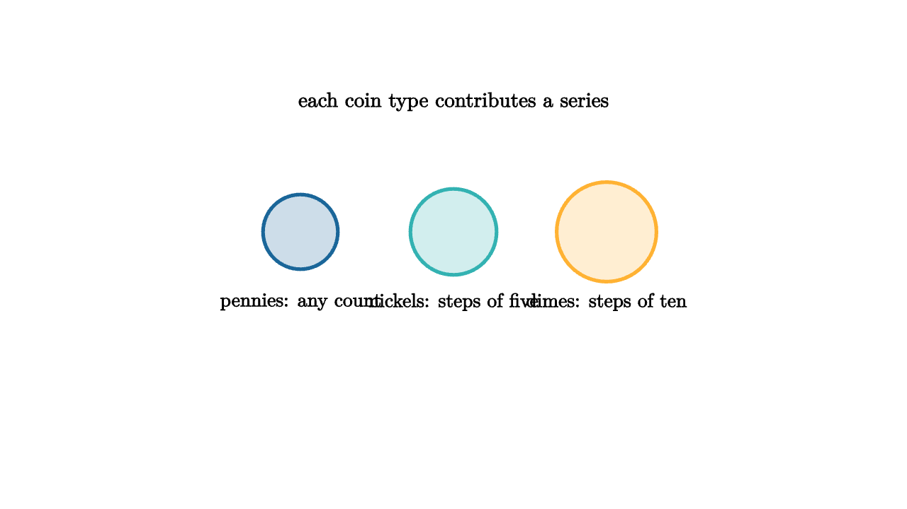

Coins, Partitions, and Infinite Products
Suppose we want the number of ways to make n cents using pennies, nickels, and dimes. For each coin type, we may use 0, 1, 2, or more coins. A penny contributes powers $1,x,x^2,x^3,\ldots$. A nickel contributes $1,x^5,x^{10},\ldots$. A dime contributes $1,x^{10},x^{20},\ldots$.
Multiply these series. Picking one term from each factor chooses how many of each coin to use. The exponent is the total value. The coefficient of x^n counts the combinations.

source
mesh scene = [
center{1.35u} Text("each coin type contributes a series", 0.66),
center{[-1.35, 0.2, 0]} fill{alpha{0.22} BLUE} stroke{BLUE, 3} Circle(0.33),
center{[-1.35, -0.42, 0]} Text("pennies: any count", 0.62),
center{[0, 0.2, 0]} fill{alpha{0.22} TEAL} stroke{TEAL, 3} Circle(0.38),
center{[0, -0.42, 0]} Text("nickels: steps of five", 0.62),
center{[1.35, 0.2, 0]} fill{alpha{0.22} ORANGE} stroke{ORANGE, 3} Circle(0.44),
center{[1.35, -0.42, 0]} Text("dimes: steps of ten", 0.62)
]The same idea counts integer partitions. A partition of n writes n as a sum of positive parts without caring about order. For part size k, choose 0, 1, 2, or more copies of k. Its factor is $1+x^k+x^{2k}+\cdots=1/(1-x^k)$. Multiplying over all k gives the partition generating function.
That infinite product is a compact ledger. The coefficient of x^n counts partitions of n. If only odd parts are allowed, use factors for odd k. If each part can be used at most once, replace each geometric series with 1 + x^k. Beautiful identities often arise when two very different products have the same coefficients.
source
let Part = |x, y, w, col| center{[x, y, 0]} fill{alpha{0.22} col} stroke{col, 2} Rect([w, 0.22])
let Parts = |count, col| block {
for (i in range(0, count)) {
. Part(-1.0 + i * 0.5, 0.05, 0.42, col)
}
. center{1.16d} Text("choose copies from each factor", 0.62)
}
"Choose Copies"
mesh title = center{1.35u} Text("a partition is assembled by part sizes", 0.64)
mesh parts = Parts(3, BLUE)
play Fade(0.7)
"Grow The Sum"
parts = Parts(5, ORANGE)
play Trans(1.0)One famous result says the number of partitions of n into odd parts equals the number of partitions of n into distinct parts. The generating functions prove it cleanly. For odd parts, use product over odd k of 1/(1 - x^k). For distinct parts, use product over all k of 1 + x^k. The identity follows from factoring 1 - x^{2k} = (1 - x^k)(1 + x^k). Algebra shows that two different descriptions produce the same coefficients.
This teaches a useful habit. Generating functions do not merely compute. They compare. If two constructions lead to the same series, they count the same numbers. Sometimes that equality hints at a direct bijection. Sometimes the algebraic proof is the simplest explanation available.
Coin problems also show the difference between combinations and sequences. If coin order does not matter, each denomination gets one factor. If order matters, the construction becomes a sequence of choices, and the generating function changes. The model must decide what a counted object remembers.
The second lesson is that repetition becomes a geometric series. Limited repetition gives finite sums. Unlimited repetition gives 1/(1 - x^k). Products combine independent part sizes. Coefficients quietly collect the valid totals. Once that dictionary is familiar, many counting problems become choices about which factors belong in the product.